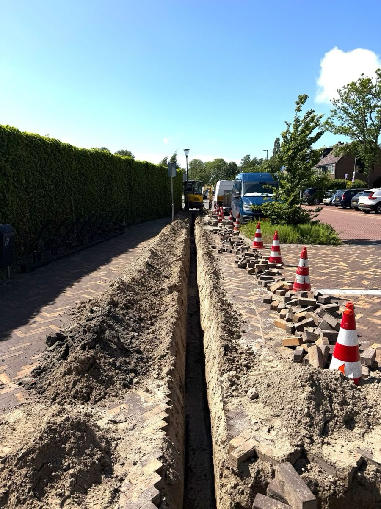

Glasvezel aanleggen
Nieuwe trajecten, kabelrouting en voorbereidende werkzaamheden voor glasvezelverbindingen.
AMA Infra helpt met aanlegwerk, huisaansluitingen, kabelschade en elektrotechnische installaties. Praktisch, duidelijk en professioneel uitgevoerd op locatie.

Aanleg Huisaansluitingen Kabelschade Elektrotechniek
Van aanleg tot herstel: AMA Infra voert glasvezel- en installatiewerk praktisch en zorgvuldig uit op locatie.
Nieuwe trajecten, kabelrouting en voorbereidende werkzaamheden voor glasvezelverbindingen.
Aansluitingen richting woning of pand, van voorbereiding tot nette oplevering.
Onderzoek en herstel bij verbindingsproblemen, kabelschade of geen signaal.
Ondersteuning bij elektrotechnische bouwinstallaties en technische werkzaamheden op locatie.
Een indruk van aanleg, installatie en herstelwerk op locatie.
U legt kort uit wat er nodig is of welk probleem er speelt.
De locatie en technische situatie worden zorgvuldig beoordeeld.
Het werk wordt praktisch, veilig en netjes uitgevoerd.
De verbinding of installatie wordt gecontroleerd en duidelijk opgeleverd.
AMA Infra werkt lokaal in Amsterdam en omgeving aan glasvezel en elektrotechnische installaties. De focus ligt op nette uitvoering, duidelijke communicatie en praktische oplossingen op locatie.
Neem contact op voor een afspraak of korte uitleg van de situatie. AMA Infra helpt met aanleg, aansluiting, storing en elektrotechnische werkzaamheden in Amsterdam en omgeving.